This package contains basic mathematical operations, such as summation and multiplication, and basic mathematical functions, such as sqrt and sin, as input/output blocks. All blocks of this library can be either connected with continuous blocks or with sampled-data blocks.
| Name | Description |
|---|---|
| Conversion blocks to convert between SI and non-SI unit signals | |
| Construct inverse model by requiring that two inputs and two outputs are identical (replaces the previously, unbalanced, TwoInputs and TwoOutputs blocks) | |
| Output the product of a gain value with the input signal | |
| Output the product of a gain matrix with the input signal vector | |
| Sum of Reals: y = k[1]*u[1] + k[2]*u[2] + ... + k[n]*u[n] | |
| 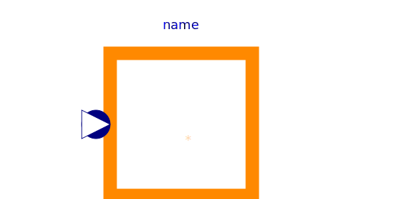 MultiProduct | Product of Reals: y = u[1]*u[2]* ... *u[n] |
| 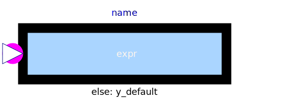 MultiSwitch | Set Real expression that is associated with the first active input signal |
| 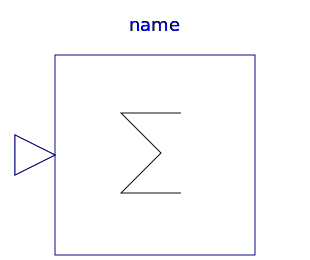 Sum | Output the sum of the elements of the input vector |
| 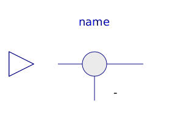 Feedback | Output difference between commanded and feedback input |
| 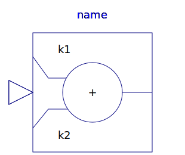 Add | Output the sum of the two inputs |
| Output the sum of the three inputs | |
| Output product of the two inputs | |
| Output first input divided by second input | |
| Output the absolute value of the input | |
| Output the sign of the input | |
| Output the square root of the input (input >= 0 required) | |
| 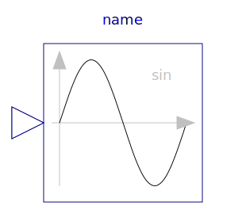 Sin | Output the sine of the input |
| Output the cosine of the input | |
| Output the tangent of the input | |
| 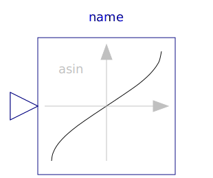 Asin | Output the arc sine of the input |
| 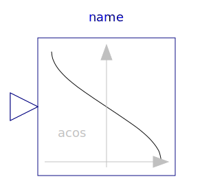 Acos | Output the arc cosine of the input |
| 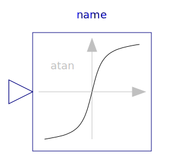 Atan | Output the arc tangent of the input |
| Output atan(u1/u2) of the inputs u1 and u2 | |
| Output the hyperbolic sine of the input | |
| Output the hyperbolic cosine of the input | |
| Output the hyperbolic tangent of the input | |
| Output the exponential (base e) of the input | |
| Output the natural (base e) logarithm of the input (input > 0 required) | |
| Output the base 10 logarithm of the input (input > 0 required) | |
| Convert Real to Integer signal | |
| Convert Integer to Real signals | |
| Convert Boolean to Real signal | |
| Convert Boolean to Integer signal | |
| 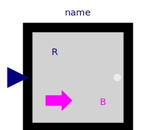 RealToBoolean | Convert Real to Boolean signal |
| Convert Integer to Boolean signal | |
| RectangularToPolar | Convert rectangular coordinates to polar coordinates |
| 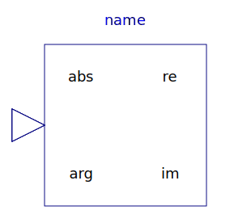 PolarToRectangular | Convert polar coordinates to rectangular coordinates |
| Calculate mean over period 1/f | |
| Calculate rectified mean over period 1/f | |
| Calculate root mean square over period 1/f | |
| Calculate harmonic over period 1/f | |
| 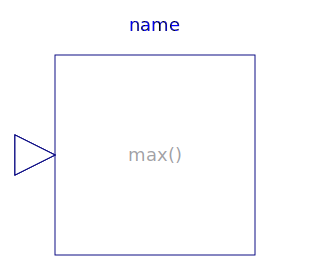 Max | Pass through the largest signal |
| Pass through the smallest signal | |
| Output the minimum and the maximum element of the input vector | |
| Output a linear combination of the two inputs | |
| 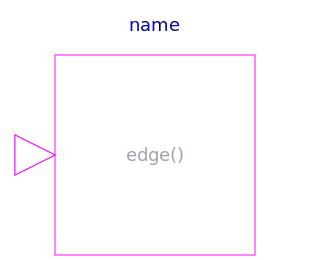 Edge | Indicates rising edge of Boolean signal |
| Indicates Boolean signal changing | |
| Indicates integer signal changing |